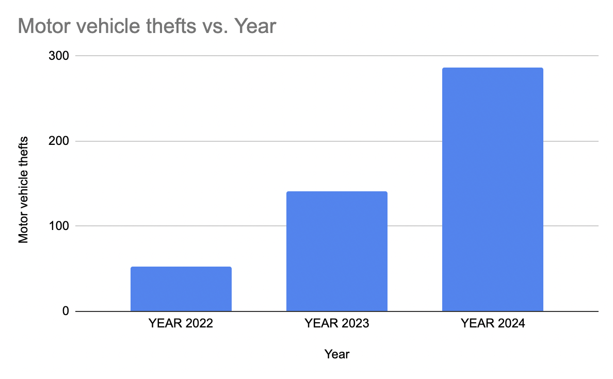
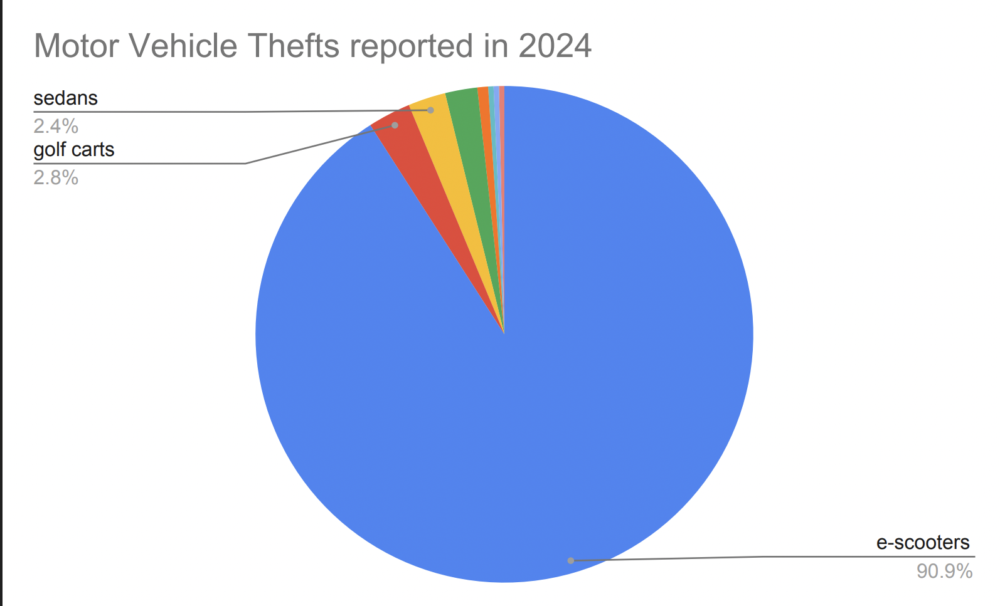

Trending e-scooters increase motor-vehicle thefts on UMD campus
By Sophia Herndon
After COVID-19, e-scooters became a popular form of transportation among college students at universities across the country, including the University of Maryland in College Park, Maryland.
E-scooters gained popularity for their convenience and speed when attending classes. Now, the increasing number of e-scooters on UMD’s campus has caused a large increase in motor-vehicle thefts, and the numbers aren’t slowing down.
In 2022, there were 53 motor vehicle thefts, while in 2023, there were 141, and in 2024, there were 287, according to the Clery Act Statistics on the University of Maryland Police Department’s website. This indicates there was a 441.5% increase in motor vehicle thefts from 2022 to 2024.

Bargraph showing the number of motor vehicle thefts from 2022-2024“Out of the 287 motor vehicle thefts reported in 2024, 261 were e-scooters, eight were golf carts, seven were sedans, six were e-bicycles, two were trucks, one was a SUV, one was a motor scooter, and one was an e-skateboard,” said the UMPD’s annual security report. This means e-scooters made up 90.9% of motor vehicle thefts in 2024.

Piechart showing the motor vehicle thefts reported in 2024Apart from the data and statistics, the UMPD has noted e-scooter thefts as an escalating issue for students on campus. The department urged the public to prioritize safety and security.
In October 2024, the UMPD released a statement to the campus community about the rising number of e-scooter thefts, urging students to be aware and responsible for their e-scooters.
“Theft is the most reported crime on our campus. However, we have seen a rapid increase in theft, specifically, theft of e-scooters,” the statement said.
The statement urged students to always lock their scooters with a secure lock, as e-scooters are an easy target. The UMPD explained that cable or chain locks can be easily cut, and that students should always lock their scooters to a bike rack rather than a pole or parking post.
The message also showed that from September 1 to October 19, 2024, the UMPD received more than 70 reports of e-scooter thefts at different locations on campus.
“E-scooters are portable, lightweight, and easy to use, making them very popular among our community. E-scooters are also appealing to others who are looking to take advantage of an opportunity,” the statement said.
To stop the growing number of stolen e-scooters, the UMPD has gathered data and utilized cameras to focus on locations on campus that are seeing an increasing number of incidents. The UMPD has also created a suspect page, which includes e-scooter suspects the UMPD is searching for.
The statement said that officers are conducting “more visual checks of areas that are used for e-scooter parking and parking lots, and sharing information with our neighboring police departments.”
The UMPD urged the College Park community to contact the department if they see any suspicious activity to prevent the rising number of e-scooter thefts. While the number of e-scooter thefts continues to rise, the community can play a crucial role in preventing motor-vehicle thefts.
“Crime prevention is a team effort, and we need the help of our community,” the statement said.